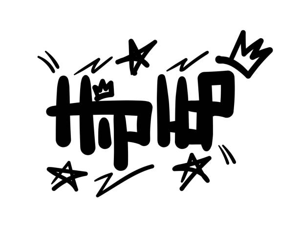

Categoría: Hip Hop - RAP
Descubre lo mejor del mundo del Hip Hop en DUOMUSIC.

La música hip hop o rap es un género de música popular desarrollado en los Estados Unidos por afroestadounidenses del centro de la ciudad en el barrio del Bronx de la ciudad de Nueva York en la década de 1970. Consiste en una música rítmica estilizada que comúnmente viene acompañada con la acción de rapear, la cual es un discurso rítmico que se canta. Se desarrolló como parte de la cultura hip hop, definida por cuatro elementos estilísticos clave: MCing/rapear, DJ/scratching (con tocadiscos), break dance y escritura de graffiti. Otros elementos incluyen muestreos de ritmos o líneas de bajo de discos (o ritmos y sonidos sintetizados) y beatboxing rítmico. El término «música hip hop» es usado como sinónimo del término «música rap». El recurso de rapear no es un componente obligatorio en la música hip hop, ya que también se pueden incorporar otros elementos de la cultura hip hop, como DJ, turntablism, scratching, beatboxing y pistas instrumentales.
Descubre los principales exponentes del Hip hop